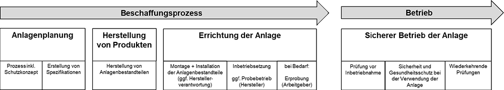
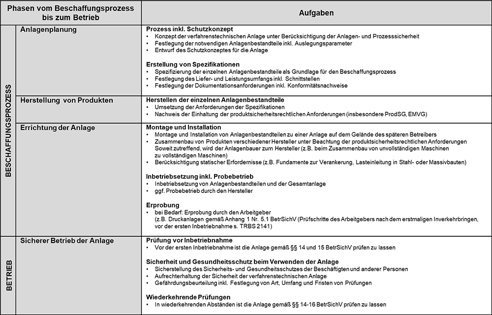
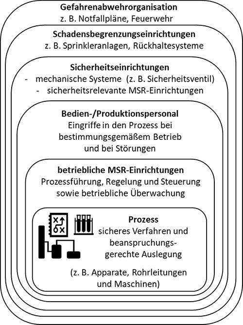
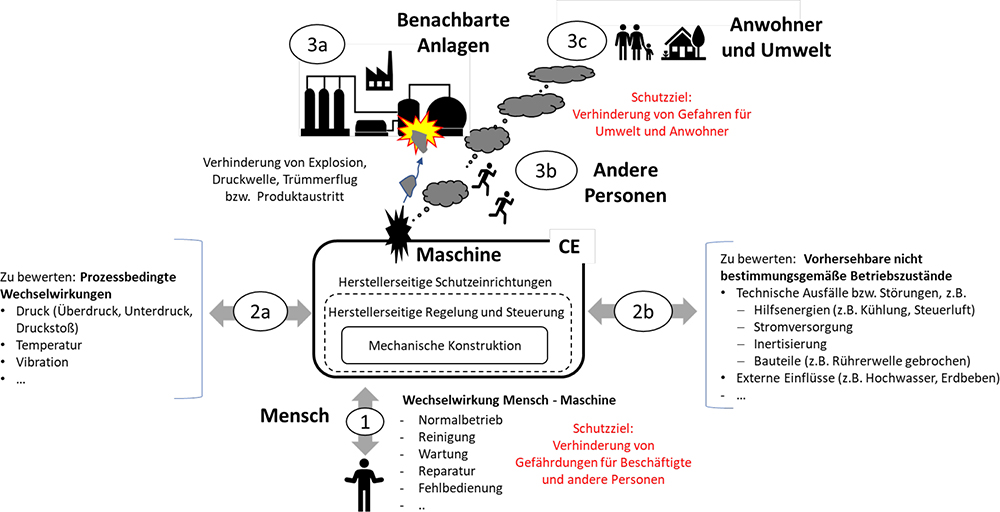
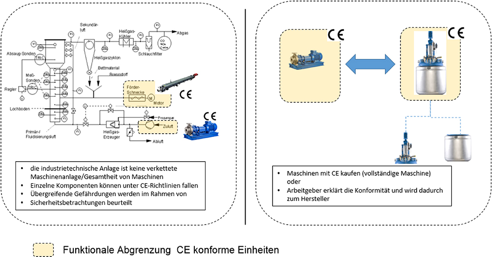
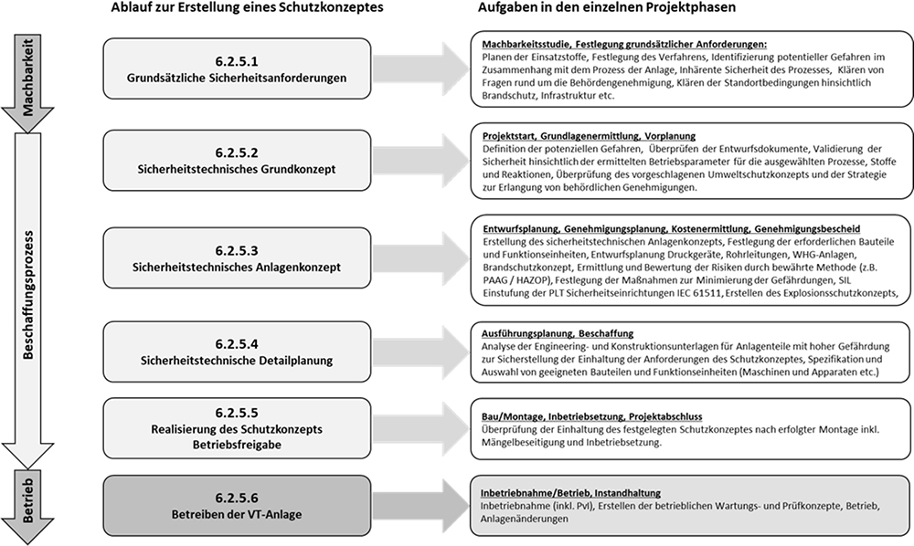
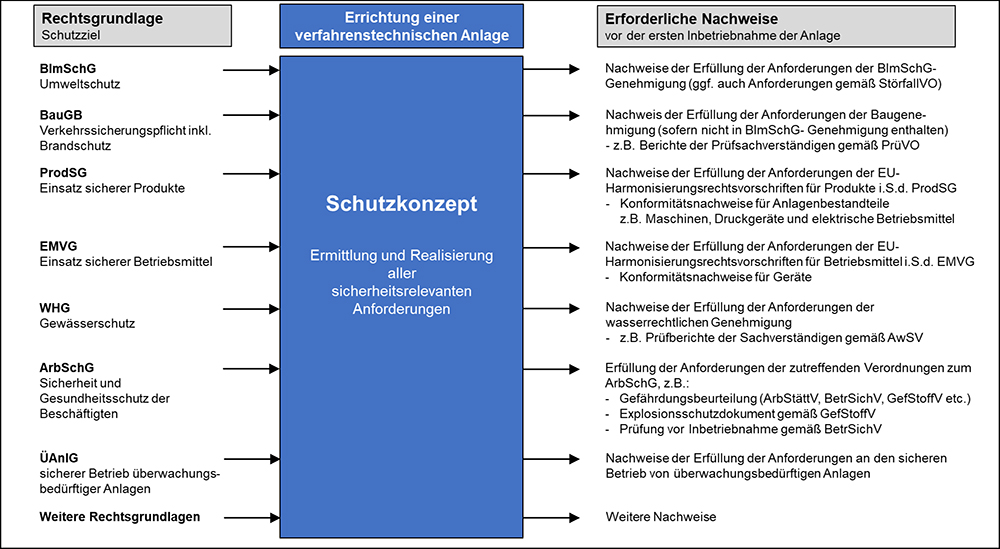

(1) Die Empfehlung für Betriebssicherheit "Beschaffung von Arbeitsmitteln" (EmpfBS 1113) erläutert, wie der Arbeitgeber bei der Beschaffung von Arbeitsmitteln vorgehen kann. Als Arbeitsmittel im Sinne der Betriebssicherheitsverordnung (BetrSichV) gelten dabei Werkzeuge, Geräte, Maschinen oder Anlagen, die für die Arbeit verwendet werden, sowie überwachungsbedürftige Anlagen.
(2) Bei der Erstellung der EmpfBS 1113 zeigte sich, dass zusätzlicher Klärungsbedarf in Bezug auf die Beschaffung von Anlagen besteht, da sie sich aufgrund ihrer Komplexität von einfachen Arbeitsmitteln unterscheiden:
(3) Eine Anlage (z. B. Industrie-, Prozess- oder verfahrenstechnische Anlagen) versteht man im Sinne dieser Empfehlung die planvolle und systematische Anordnung von in funktionalem Zusammenhang stehenden Bestandteilen, die physisch und steuerungstechnisch miteinander verbunden sind, wie z. B.:
Im Folgenden werden für Bestandteile von Anlagen je nach Sinnzusammenhang auch die in der Praxis gängigen Begriffe "Anlagenbestandteile", "Bauteile" und "Funktionseinheiten" verwendet.
(4) Während einzelne Geräte, Maschinen und Werkzeuge vom Arbeitgeber auf dem Unionsmarkt als Produkte beschafft werden können, sind Anlagen üblicherweise Unikate, die auf die betrieblichen Belange des Arbeitgebers zugeschnitten sind und deswegen in der Regel nicht schlüsselfertig als Produkt beschafft werden können.
(5) Die BetrSichV richtet sich an den Arbeitgeber, der zur Gewährleistung eines sicheren Betriebes seiner Anlagen noch zahlreiche weitere Rechtsvorschriften berücksichtigen muss. Diese Rechtsvorschriften verwenden unterschiedliche Begriffe für den Normadressaten, sodass dem Arbeitgeber gleichzeitig weitere Rollen z. B. als Bauherr und Betreiber zukommen.
Im vorliegenden Dokument geht es schwerpunktmäßig um die Schnittstelle zwischen den Anforderungen des Produktrechts und dem sicheren Betrieb von Anlagen. Zur eindeutigen Abgrenzung der Verantwortlichkeiten werden daher zwei Begriffe verwendet:
Im Spannungsfeld unterschiedlicher Rechtsvorschriften liefert das vorliegende Papier praktikable Hilfestellungen, um sowohl den rechtlichen Anforderungen als auch der Abgrenzung zwischen Herstellerverantwortung und Arbeitgeberverantwortung gerecht werden zu können.
Die Umsetzung der Anforderungen wird am Beispiel einer verfahrenstechnischen Anlage erläutert, bei der es darum geht, einen verfahrenstechnischen Prozess so zu gestalten, dass der sichere Betrieb der Anlage gewährleistet ist.
(1) Entsprechend § 5 Absatz 3 BetrSichV darf der Arbeitgeber nur solche Arbeitsmittel zur Verfügung stellen und verwenden lassen, die die Rechtsvorschriften über Sicherheit und Gesundheitsschutz erfüllen. Um die Anforderungen an die einzelnen Anlagenbestandteile festlegen zu können, muss der Arbeitgeber unter Berücksichtigung der Anlagen- bzw. prozessbedingten Gefährdungen ermitteln, welche Rechtsvorschriften für den sicheren Betrieb zu beachten sind. Dabei sind nach § 5 Absatz 1 BetrSichV die zu erwartenden Einsatzbedingungen, die vorhersehbaren Beanspruchungen und die erforderlichen sicherheitsrelevanten Ausrüstungen zu berücksichtigen sowie auch "vorhersehbare Betriebsstörungen" (§ 3 Absatz 2 Satz 2 Nummer 4 BetrSichV).
(2) Neben dem Arbeitsschutzgesetz mit den zugehörigen Verordnungen und dem Gesetz über überwachungsbedürftige Anlagen (ÜAnlG) sind für die Errichtung und den Betrieb z. B. folgende Rechtsvorschriften zu beachten:
Außerdem sind die zivilrechtlichen Sorgfaltspflichten immer zu beachten.
(3) Die aus oben genannten Rechtsvorschriften resultierenden Anforderungen an den sicheren Betrieb müssen bei der Festlegung der Liefer- und Leistungsumfänge (Spezifikationen) für die einzelnen Anlagenbestandteile berücksichtigt werden.
(4) Darüber hinaus sind bei der Errichtung der Anlage mögliche Herstellerpflichten zu beachten:
(1) Für die Errichtung und den Betrieb einer Anlage als Arbeitsmittel gelten in Deutschland zahlreiche Gesetze und Verordnungen, die sich an unterschiedliche Normadressaten richten.
(2) Dem Arbeitgeber kommen in den Phasen der Planung, der Errichtung und des Betriebes als Bauherr, Arbeitgeber und Betreiber verschiedene Rollen zu. Im Zuge der Errichtung der Anlage können ihm ggf. sogar Herstellerpflichten zufallen.
(3) Eine Übersicht über die wesentlichen Gesetze und Verordnungen ist Tabelle A2-1 zu entnehmen. Darüber hinaus sind die jeweils zugehörigen Technischen Regeln sowie weitere Anforderungen zu beachten, insbesondere die der Träger der gesetzlichen Unfallversicherung (DGUV- Regelwerk).
Tab. A2-1 Wesentliche Rechtsvorschriften für Errichtung und Betrieb einer Anlage
| ProdSG Bereit- stellung sicherer Produkte | EMVG Schutz vor elektro- magnetischen Störungen | BauGB Öffentliche Sicherheit und Ordnung | BImSchG Schutz vor schädlichen Umweltein- wirkungen | WHG Schutz der Gewässer | ArbSchG Sicherheit und Gesund- heitsschutz der Beschäftigten bei der Arbeit | ÜAnlG Sicherheit und Gesund- heitsschutz beim Betrieb überw.-bed. Anlagen |
| 1. ProdSV Elektrische Betriebs- mittel 6. ProdSV Einfache Druckbe- hälter 9. ProdSV Maschinen- verordnung 11. ProdSV Explo- sions- schutzpro- duktever- ordnung 14. ProdSV Druck- geräte- verordnung | EMVV Elektromag- netische Verträg- lichkeit von Betriebs- mitteln | Bau- ordnungen der Länder | 12. BImSchV Störfall- verordnung | AwSV Anlagen zum Umgang mit wasserge- fährdenden Stoffen | ArbMedVV ArbStättV BaustellV BetrSichV BildSchArv BiostoffV EMFV GefStoffV LärmVibrati- ons-ArbSchV LasthandhabV OstrV PSA-BV | Anfor- derungen an Erlaubnis und Prüfungen sind durch die BetrSichV konkre- tisiert. |
| Adressat: Hersteller | Adressat: Hersteller/ Betreiber | Adressat: Bauherr | Adressat: Betreiber | Adressat: Betreiber | Adressat: Arbeitgeber | Adressat: Betreiber |
(4) Mit der Auswahl des verfahrenstechnischen Prozesses, der Wahl des Standortes, der Bereitstellung von Ressourcen, der logistischen Anbindung, den Festlegungen zur Verfügbarkeit etc. hat der Arbeitgeber unmittelbaren Einfluss auf die Gestaltung der Anlage.
Zur Realisierung der Anlage benötigt er i. d. R. Auftragnehmer, die in seinem Auftrag
In seiner Funktion als Auftraggeber sollte der Arbeitgeber daher bereits bei der Erstellung der Spezifikationen besonderes Augenmerk darauf richten, die Verantwortlichkeiten der beteiligten Akteure auszugestalten. Es muss deutlich werden, wem welche Verantwortung für die Planung, die Herstellung und Bereitstellung von Produkten sowie die Montage und Inbetriebsetzung der Anlage zukommt.
Der Beschaffungsprozess für eine Anlage kann in die Phasen Planung und Herstellung von Produkten und Errichtung der Anlage unterteilt werden und sich über mehrere Jahre erstrecken. Der Betrieb der Anlage beginnt, wenn der Beschaffungsprozess abgeschlossen ist.

Abb. A2-1 Vom Beschaffungsprozess zum Betrieb einer Anlage
Nachfolgend werden beispielhaft Aufgaben beschrieben, die vom Arbeitgeber selbst erbracht oder an externe Fachfirmen vergeben werden können.
(1) Die Anlagenplanung umfasst die notwendigen Planungsleistungen und die planerische Verantwortung dafür, dass die Prozesse zuverlässig funktionieren und die Schutzmaßnahmen dem Stand der Technik entsprechen. Dabei sind insbesondere die Anforderungen an den Schnittstellen zwischen den einzelnen Anlagenbestandteilen festzulegen.
(2) Einen wesentlichen Anteil der Anlagenplanung macht die systematische Berücksichtigung der Rechtsvorschriften aus. Die zu treffenden Maßnahmen stehen ggf. in Wechselwirkung und müssen daher aufeinander abgestimmt werden. Beispielsweise müssen Maßnahmen zum Arbeits- und Umweltschutz durch eine konzeptionelle Verknüpfung der technischen, organisatorischen und personenbezogenen Maßnahmen ineinandergreifen. Folglich können die anzuwendenden Rechtspflichten nur durch einen integrierenden planerischen Ansatz und in Abstimmung mit den beteiligten Akteuren erfüllt werden. Es empfiehlt sich, sich frühzeitig mit den am Genehmigungsverfahren beteiligten Behörden abzustimmen.
(3) Diese Betrachtungen fließen in das Schutzkonzept für die Anlage ein (siehe Abschnitt 6.2 dieses Anhangs). Die sich daraus ergebenden Anforderungen an die Eignung und Funktion der einzelnen Bestandteile der Anlage und deren Zusammenwirken müssen in den Spezifikationen beschrieben werden.
Ein Hersteller von Produkten muss sicherstellen, dass die für seinen Liefer- und Leistungsumfang geltenden produktrechtlichen Anforderungen erfüllt werden. In einer Anlage kommen zahlreiche Produkte unterschiedlicher Hersteller zum Einsatz, bei deren Integration in die Anlage ggf. weitere Herstellerpflichten zu beachten sind.
(1) Die Errichtung der Anlage im Sinne der BetrSichV schließt die Montage und Installation der einzelnen Anlagenbestandteile zu einer Anlage auf dem späteren Betriebsgelände ein.
(2) Bei der Errichtung der Anlage muss sichergestellt werden, dass die einzelnen Anlagenbestandteile unter Beachtung der Herstellerpflichten gemäß ProdSG zusammengebaut werden. Dabei kann dem Arbeitgeber ggf. die Rolle des Herstellers zufallen, wenn z. B. zwei Hersteller jeweils eine unvollständige Maschine liefern, die von ihm selbst zu einer vollständigen Maschine zusammengebaut werden müssen.
(3) Besonderes Augenmerk sollte auf die Schnittstellen zwischen Anlagenbestandteilen und den Bauwerken/Gebäudeteilen gerichtet werden. Das betrifft insbesondere Verankerungselemente, die dazu bestimmt sind, Anlagenbestandteile wie z. B. Behälter und Rohrleitungen am Aufstellungsort zu fixieren sowie die entstehenden Kräfte in das Bauwerk einzuleiten und damit deren Standsicherheit zu gewährleisten.
(4) Die Errichtung der Anlage ist die letzte Phase des Beschaffungsprozesses. Häufig ist die Errichtung nach der Montage und Installation bereits abgeschlossen. Je nach Komplexität des Anlagenbestandteils können weitere Maßnahmen notwendig sein, um die Funktion der einzelnen Anlagenbestandteile, deren Zusammenwirken und insbesondere die elektro- und leittechnischen Einrichtungen vor Ort zu überprüfen.
(5) Je nachdem, ob diese vorbereitenden Maßnahmen für die Inbetriebnahme der Anlage unter der Verantwortung des Herstellers oder des Arbeitgebers erfolgen, werden zwei Fälle unterschieden:
Fall 1: Probebetrieb durch den Hersteller
Zum Abschluss der Inbetriebsetzung erfolgt ggf. ein Probebetrieb, mit dem der Hersteller gegenüber dem Arbeitgeber den Nachweis der vertraglich vereinbarten Leistungen erbringt.
Nach der Inbetriebsetzung erfolgt der Verantwortungsübergang vom Hersteller auf den Arbeitgeber. Das Inverkehrbringen ist zu diesem Zeitpunkt abgeschlossen.
Fall 2: Erprobung durch den Arbeitgeber
Bei komplexen Anlagen ist es gängige Praxis, dass der Arbeitgeber die einwandfreie Funktion der gesamten Anlage vor der erstmaligen Inbetriebnahme überprüft, um sicherzustellen, dass die Anlage sicher verwendet werden kann. Eine Erprobung durch den Arbeitgeber erfolgt erst nach dem Verantwortungsübergang, d. h. nach Abschluss des Inverkehrbringens der jeweiligen Anlagenbestandteile.
Hinweis: Die Begriffe Inbetriebsetzung, Probebetrieb und Erprobung sind in Abschnitt 2 – "Begriffsbestimmungen und Hinweise" des Hauptteils dieser EmpfBS definiert.
Für den sicheren Betrieb einer Anlage trägt der Arbeitgeber die Verantwortung. Er muss sicherstellen, dass vor der erstmaligen Verwendung der Anlage alle Anforderungen zum Schutz von Sicherheit und Gesundheit der Beschäftigten umgesetzt und im Ergebnis der Gefährdungsbeurteilung dokumentiert sind. Weiterhin muss der Arbeitgeber vor der erstmaligen Inbetriebnahme und in wiederkehrenden Abständen Prüfungen gemäß §§ 14–16 BetrSichV veranlassen und deren Ergebnisse dokumentieren.
Tab. A2-2 Aufgaben vom Beschaffungsprozess bis zum Betrieb einer Anlage

Unter Berücksichtigung der gesetzlichen Pflichten sollte zwischen den beteiligten Akteuren vertraglich festgelegt werden, wer in den Projektphasen welche Aufgaben übernimmt, insbesondere:
| a) | Montage und Installation, |
| b) | Inbetriebsetzung, ggf. Probebetrieb durch den Hersteller, |
| c) | ggf. Erprobung durch den Arbeitgeber. |
(1) Der Arbeitgeber muss beurteilen, ob für den Anwendungsfall die von den Produkten "mitgebrachte Sicherheit" ausreicht, die sich aus den Sicherheits- und Gesundheitsschutzanforderungen der Harmonisierungsrechtsvorschriften der Union ergibt. Wenn sich durch das Zusammenwirken mehrerer Produkte oder durch die Einbindung in den verfahrenstechnischen Prozess zusätzliche Anforderungen ergeben, sind gegebenenfalls weitere Schutzmaßnahmen erforderlich. Dabei sind ggf. auch Anforderungen an Schutzmaßnahmen aus anderen Rechtsvorschriften zu berücksichtigen (z. B. Immissionsschutz und Störfallrecht, Gewässerschutz, Baurecht, Brandschutz). Die Festlegung von Schutzmaßnahmen für Anlagen erfolgt daher in der Praxis am besten in enger Abstimmung zwischen den Herstellern der einzelnen Anlagenbestandteile und dem späteren Arbeitgeber.
(2) Durch die getroffenen Schutzmaßnahmen ist sicherzustellen, dass alle gesetzlichen Schutzziele (unter anderem Arbeitsschutz, Gewässerschutz oder Immissionsschutz) erfüllt werden, d. h. die Gefährdung von Beschäftigten oder anderen Personen und das verbleibende Restrisiko so gering wie möglich sind.
(3) Grundsätzlich sind die Schutzziele in den verschiedenen Rechtsbereichen vorgegeben, es wird jedoch keine Methode zur systematischen Ermittlung der Schutzmaßnahmen vorgeschrieben. Die gängigen Methoden sind nachfolgend beschrieben.
(1) Das Arbeitsschutzgesetz verlangt vom Arbeitgeber, durch eine Beurteilung der für die Beschäftigten mit ihrer Arbeit verbundenen Gefährdungen zu ermitteln, welche Maßnahmen des Arbeitsschutzes erforderlich sind. In den zahlreichen Verordnungen zum Arbeitsschutzgesetz (z. B. BetrSichV, GefStoffV, ArbStättV) sowie im ÜAnlG wird hierfür der Begriff "Gefährdungsbeurteilung" verwendet, die vor der Verwendung von Arbeitsmitteln, zu denen auch Anlagen gehören, durchzuführen ist.
(2) Die Gefährdungsbeurteilung soll bereits vor der Auswahl und der Beschaffung der Arbeitsmittel begonnen werden (§ 3 Absatz 3 BetrSichV). Durch die dabei festgelegten Schutzmaßmaßnahmen muss sichergestellt werden, dass die betrieblichen Schutzanforderungen eingehalten werden können. Dies bedeutet, auch wenn ein Arbeitsmittel mit einer Konformitätserklärung geliefert wird, hat der Arbeitgeber unter anderem die Einhaltung von Grenzwerten (z. B. Arbeitsplatzgrenzwerte) sicherzustellen und gegebenenfalls zusätzliche Maßnahmen zu treffen (z. B. Raumentlüftung oder Lärmminderungsmaßnahmen).
Die Harmonisierungsrechtsvorschriften der Unionschreiben für Produkte, die auf dem Markt bereitgestellt und zum Teil auch für Produkte, die für eigene Zwecke hergestellt werden, schreiben eine Beurteilung der Risiken durch den Hersteller des Produktes vor.
Es werden verschiedene Begriffe verwendet, z. B.:
Die Beurteilung der Risiken hat immer das Ziel, Schutzmaßnahmen festzulegen, die notwendig sind, um die Sicherheit von Produkten zu gewährleisten.
In der TRBS 1111 wird für die Auswahl und Verknüpfung von technischen, organisatorischen und personenbezogenen Schutzmaßnahmen der Begriff "Schutzkonzept" verwendet, durch das die Sicherheit und der Gesundheitsschutz der Beschäftigten und anderer Personen gewährleistet werden muss (siehe Abschnitt 6.2 dieses Anhangs).
(1) Bei der Beschaffung von verfahrenstechnischen Anlagen steht zunächst der verfahrenstechnische Prozess im Mittelpunkt. Ein sicherer verfahrenstechnischer Prozess ist die Grundvoraussetzung für den sicheren Betrieb einer verfahrenstechnischen Anlage. Hierfür ist es erforderlich, dass die an der Planung Beteiligten eine systematische sicherheitstechnische Betrachtung des verfahrenstechnischen Prozesses vornehmen, die Anforderungen an die Anlagenbestandteile entsprechend spezifizieren und dabei insbesondere die Schnittstellen, die sich durch den Zusammenbau der einzelnen Anlagenbestandteile ergeben, berücksichtigen. Erforderlichenfalls sind geeignete Schutzmaßnahmen festzulegen. Betriebliche Erfahrungen von Beschäftigten sollten berücksichtigt werden.
(2) Dazu werden bestimmte Methoden angewendet, mit deren Hilfe mögliche Abweichungen vom bestimmungsgemäßen Betrieb aufgedeckt und geeignete Maßnahmen zur Verhinderung solcher Anlagenzustände festgelegt werden.
Solche Methoden sind z. B. PAAG/HAZOP, bei denen unter Anwendung sogenannter Leitworte die Abweichungen und Störungen "generiert" werden. Bei Anlagen, die unter die Störfallverordnung fallen, sind Schutzmaßnahmen im Rahmen der "Risikoanalyse/Sicherheitsbetrachtung" festzulegen. Diese sind in das Schutzkonzept für die Anlage zu integrieren.
(1) Verfahrenstechnische Anlagen (VT-Anlagen) dienen zur chemischen, physikalischen oder biologischen Umwandlung von Stoffen. Sie umfassen in der Regel eine Vielzahl von Bauteilen, beispielsweise Rohrleitungen, Pumpen, Behälter, Mischorgane und Armaturen sowie ihre sicherheitstechnische Ausrüstung (wie z. B. Mess-, Steuer- und Regeleinrichtungen und Druckentlastungseinrichtungen).
(2) Aufgrund der vielfältigen Eigenschaften der in der VT-Anlage gehandhabten Stoffe, der physikalisch-chemischen Prozessbedingungen sowie der Wechselwirkungen zwischen den zahlreichen Anlagenbestandteilen können sich verschiedenartige Gefährdungen ergeben. Dies gilt insbesondere für Anlagen, in denen entzündbare oder wassergefährdende Stoffe in großen Mengen gehandhabt werden oder chemische Stoffumwandlungen unter Freisetzung von Reaktionswärme und gasförmiger Reaktionsprodukte durchgeführt werden.
(3) Wenn von diesen Anlagen Gefahren für Menschen, Umwelt und Sachgüter ausgehen können, welche über den Gefahrenbereich der Anlage hinauswirken, müssen in der Regel weitere Anforderungen für Errichtung und Betrieb beachtet werden.
Im Rahmen eines Schutzkonzeptes für verfahrenstechnische Anlagen sind Gefahrenquellen und Gefährdungen zu ermitteln und zu beurteilen, die sich unter anderem ergeben aus:
(1) Ein Schutzkonzept berücksichtigt die Gefährdungen von Beschäftigten und anderen Personen sowie ggf. darüber hinaus die Gefahren für Allgemeinheit, Umwelt und Sachwerte (ermittelt durch eine Sicherheitsbetrachtung nach Störfallverordnung).
(2) Dieses Schutzkonzept verantwortet der Arbeitgeber, wobei unter anderem folgende Aspekte zu berücksichtigen sind:
| a) | Eigenschaften der beteiligten Stoffe (z. B. Reaktivität, Toxizität, Brennbarkeit), |
| b) | Mengen der eingesetzten Stoffe und |
| c) | Exothermie der Reaktionen, |
| a) | Mensch – Maschine (z. B. Normalbetrieb, Wartung, Fehlbedienung), |
| b) | durch Einbindung von Bauteilen in verfahrenstechnischen Anlagen (z. B. Maschine, Druckbehältern, Rohrleitungen, siehe Abschnitt 6.2.4 "Einbindung von Bauteilen in verfahrenstechnische Anlagen" dieses Anhangs), |
| c) | mit natur- und umgebungsbedingten Faktoren (z. B. Hochwasser, Erdbeben, sowie benachbarte Anlagen), |
| d) | Störungen in der Energieversorgung inkl. Hilfssysteme (z. B. Ausfall der Kühlung), |
| a) | Emissionen, |
| b) | Brände und Explosionen, |
| c) | Druckwellen und Trümmerflug. |
(3) Dieses Schutzkonzept muss über die gesamte Lebensdauer der verfahrenstechnischen Anlage regelmäßig geprüft und gegebenenfalls aktualisiert werden.
(4) Verfahrenstechnische Anlagen können nicht nur der BetrSichV beziehungsweise der GefStoffV, sondern auch weiteren Rechtsvorschriften (z. B. StörfallV) unterliegen, die dann bei der sicherheitstechnischen Auslegung zusätzlich zu berücksichtigen sind.
(1) Bei der Realisierung eines Schutzkonzeptes sind zunächst Maßnahmen vorzusehen, die den bestimmungsgemäßen Betrieb sicherstellen und Gefahren eines möglichen nicht bestimmungsgemäßen Betriebs verhindern bzw. minimieren.
(2) Da potenzielle Auswirkungen von Störungen/Ereignissen in der verfahrenstechnischen Anlage weit über den Aufstellungsbereich eines einzelnen Arbeitsmittels hinauswirken können, müssen im Rahmen des Schutzkonzeptes auch Maßnahmen getroffen werden, die zur Begrenzung der Auswirkungen von potenziellen Ereignissen dienen. Daher wird das Schutzkonzept für die verfahrenstechnische Anlage in der Regel auf mehreren voneinander unabhängigen Schutzebenen aufgebaut (siehe Abbildung A2-2).

Abb. A2-2 Schutzebenen einer verfahrenstechnischen Anlage
(3) In Abhängigkeit der beim Betrieb der VT-Anlage auftretenden Gefährdungen sind typischerweise folgende Schutzebenen vorgesehen:
(1) Die Einbindung von Bauteilen in verfahrenstechnische Anlagen wird nachfolgend am Beispiel einer Maschine erläutert. Bei der Einbindung von Bauteilen (z. B. Maschinen) in verfahrenstechnische Anlagen müssen die Wechselwirkungen zwischen den Bauteilen und dem verfahrenstechnischen Prozess sowie den benachbarten Anlagenteilen bewertet werden (Nummerierung siehe Abbildung A2-3).

Abb. A2-3 Bewertung der Wechselwirkungen zwischen Mensch – Maschine und verfahrenstechnischer Anlage
| a) | Maschinen, die die erforderlichen Sicherheitsanforderungen bereits erfüllen, können in die verfahrenstechnische Anlage integriert werden. Gegebenenfalls sind für die Einbindung im Rahmen der Anlagensicherheit zusätzliche prozesstechnische/betriebliche Maßnahmen erforderlich, die vom Arbeitgeber im Schutzkonzept festgelegt sind. |
| b) | Sofern hingegen gemäß dem Schutzkonzept des Arbeitgebers die für den Prozess erforderlichen Maschinen prozessspezifisch konstruiert oder sicherheitstechnisch angepasst werden müssen, ist der Maschinenhersteller auf Informationen des Arbeitgebers angewiesen. In der Regel ist eine gemeinsame Sicherheitsdurchsprache sinnvoll, in der alle spezifischen Anforderungen festgelegt werden. |
(2) Wechselwirkungen an den Schnittstellen zwischen Anlage und Maschine (z. B. Steuerung, Signalaustausch, Einbindung in die Infrastruktur) sowie Gefährdungen, die möglicherweise über den Aufstellungsbereich der Maschine hinausgehen, können im Rahmen einer gemeinsamen Sicherheitsdurchsprache abgeklärt werden. Dies erfolgt im Rahmen der Gefährdungsbeurteilung des Arbeitgebers und der Risikobeurteilung des Maschinenherstellers. Dabei wird festgelegt, welche der resultierenden Maßnahmen im Lieferumfang des Herstellers liegen und welche Maßnahmen und Beistellungen im Einzelfall durch den Arbeitgeber erbracht werden.
In der Regel ist hierfür ein gemeinsames Review des Sachverhalts und eine gemeinsam verfasste schriftliche Notiz sowie eine Referenz in den mitgeltenden technischen Unterlagen ausreichend. Falls erforderlich, kann die Aushändigung der Herstellerrisikobeurteilung zwischen Hersteller und Arbeitgeber vertraglich vereinbart werden, ein gesetzlicher Anspruch besteht jedoch nicht.
Der Maschinenhersteller berücksichtigt bei der Konstruktion der Maschine die Ergebnisse der gemeinsamen Sicherheitsdurchsprache. Die Erklärung der Konformität zur Maschinenrichtlinie erfolgt durch den Hersteller entsprechend der Vorgaben der RL 2006/42/EG.
Die Erstellung eines Schutzkonzeptes für eine verfahrenstechnische Anlage ist ein iterativer Prozess, an dem die Spezialisten der verschiedenen Fachabteilungen eingebunden sind. Analysen, Beurteilungen und Maßnahmen werden entsprechend dem Planungs- und Baufortschritt verfeinert, ergänzt und fortgeschrieben. Die Erstellung eines Schutzkonzeptes kann beispielhaft in folgenden Schritten erfolgen.
Die Erstellung des Schutzkonzeptes beginnt entsprechend Abbildung A2-5 unter der Berücksichtigung der jeweiligen Standortbedingungen (z. B. rechtliche Anforderungen, Brandschutz, Infrastruktur) sowie firmenspezifischen Sicherheits- und Umweltanforderungen mit der Festlegung des Verfahrens sowie der erforderlichen Einsatzstoffe und Stoffmengen.
Basierend auf den zu handhabenden Stoffen, Prozessen und Reaktionen werden die Betriebsparameter unter Berücksichtigung der Sicherheit für Mensch und Umwelt sowie der Vermeidung und Entsorgung von Abfällen festgelegt.
Im nächsten Schritt erfolgt die Erstellung des sicherheitstechnischen Anlagenkonzeptes. Dabei werden basierend auf den Betriebs- und Auslegungsparametern:
(1) Im Rahmen der sicherheitstechnischen Detailplanung erfolgt die Umsetzung der festgelegten Sicherheitsanforderungen sowie die Spezifikation und Auswahl der Bauteile und Funktionseinheiten, die die geforderten sicherheitstechnischen Beschaffenheitsanforderungen erfüllen. Dabei ist zu beachten, dass das Schutzkonzept die Eignung und Funktionsfähigkeit der verfahrenstechnischen Anlage für den sicheren Betrieb berücksichtigt.
(2) Bei der Auswahl und Spezifikation ist es zweckmäßig, die verfahrenstechnische Anlage abgeleitet aus den verfahrenstechnischen Prozessschritten in Funktionseinheiten (z. B. Rohrleitungen, Apparate, Reaktoren, Fördereinrichtungen, Maschinen) zu gliedern. Dabei kann es zweckmäßig sein, den Umfang der Funktionseinheiten entsprechend den anzuwendenden Harmonisierungsrechtsvorschriften der Union und anderen Rechtsvorschriften abzugrenzen, um die daraus resultierenden Schutzziele sowie formalen Anforderungen zu erfüllen.
Hinweis: Je nach Anwendungsbereich der Rechtsvorschriften können sich die Grenzen der zu betrachtenden Funktionseinheiten unterscheiden und auch von dem Lieferumfang eines Herstellers abweichen. So stimmen z. B. die Grenzen einer Maschine nicht zwangsläufig mit dem Liefer- und Leistungsumfang überein.
Es empfiehlt sich, den Umfang der Funktionseinheiten frühzeitig gemeinsam mit den Lieferanten so festzulegen, dass die Verantwortlichkeiten für die Erfüllung der rechtlichen Anforderungen eindeutig zugeordnet sind (siehe Abbildung A2-4). Bei einer verfahrenstechnischen Anlage handelt es sich in der Regel nicht um eine Gesamtheit von Maschinen.

Abb. A2-4 Einteilung einer Anlage in Funktionseinheiten
(3) Bei der Spezifikation und Auswahl der Bauteile und Funktionseinheiten sind die Gefährdungen, die sich aus deren Verwendung und durch deren Einbindung in die verfahrenstechnische Anlage ergeben können, zu berücksichtigen und gegebenenfalls mit dem Hersteller abzustimmen. Hierbei sind auch die Auswirkungen auf das sicherheitstechnische Anlagenkonzept, die Aspekte der Arbeitssicherheit sowie die der Umwelt und die Herstellerhinweise (z. B. Montage- und Bedienungsanleitung) zur sicheren Verwendung zu berücksichtigen (siehe Abschnitt 6.2.4 "Einbindung von Bauteilen in verfahrenstechnische Anlagen" dieses Anhangs).
Nach der Montage der Anlage erfolgt im Schritt 5 vor der Inbetriebsetzung ein Abgleich, ob das Schutzkonzept korrekt umgesetzt wurde. Werden dabei Abweichungen oder Mängel festgestellt, müssen diese unterteilt werden in solche, die vor Inbetriebnahme behoben werden müssen und diejenigen, die nach der Inbetriebnahme abgeschlossen werden können.
Nach dem Abschluss der Errichtung ist das Inverkehrbringen der einzelnen Bauteile und Funktionseinheiten abgeschlossen und die Inbetriebnahme der verfahrenstechnischen Anlage kann erfolgen.
Bei Änderungen an bestehenden Anlagen, z. B. Einbindung zusätzlicher Apparate oder Maschinen, ist die Auswirkung auf das bestehende Schutzkonzept zu beurteilen und eine Aktualisierung bzw. Anpassung der bestehenden Sicherheitsbetrachtung beziehungsweise Risikobeurteilung erforderlich. Eine erneute Durchführung schon beurteilter Gefährdungen ist nicht erforderlich, sofern keine Gründe zur Überprüfung vorliegen.

Abb. A2-5 Beispielhafte Planung einer VT-Anlage und deren sicherheitstechnische Zusammenhänge
(1) Schutzkonzepte in verfahrenstechnischen Anlagen bestehen in der Regel aus mehreren unabhängigen Schutzebenen (siehe Abbildung A2-2). Als technische Schutzmaßnahmen kommen in diesem Zusammenhang häufig auch sicherheitsrelevante Mess-, Steuer- und Regeleinrichtungen (MSR-Einrichtungen) gemäß TRBS 1115 zur Anwendung.
(2) Die Auslegung sicherheitsrelevanter MSR-Einrichtungen erfolgt auf Basis von branchenspezifischen technischen Normen und Richtlinien, die den Stand der Technik beschreiben. In verfahrenstechnischen Anlagen sind häufig mehrere Rechtsbereiche gleichzeitig anzuwenden, sodass unterschiedliche Anforderungen für die Auslegung sicherheitsrelevanter MSR-Einrichtungen gleichzeitig zu erfüllen sind.
(3) Die Ausstattung von Maschinen mit sicherheitsrelevanten MSR-Einrichtungen im Anwendungsbereich des ProdSG bzw. 9. ProdSV (MRL 2006/42/EG) erfolgt in der Regel auf Basis der zur MRL harmonisierten Normen EN ISO 13849-1/2 oder DIN EN 62061. Diese berücksichtigen die für Maschinen charakteristischen Gefährdungen und Betriebsweisen. Für einige Maschinengattungen stehen zudem Produktnormen (Typ-C-Normen) zur Verfügung, welche detaillierte Vorgaben hinsichtlich MSR-Einrichtungen enthalten. Diese reduzieren in der Regel im Wesentlichen Gefährdungen, welche sich auf den Bediener bzw. den unmittelbaren Aufstellungsbereich der Maschine beschränken (siehe Schnittstelle 1 in Abbildung A2-3).
(4) Zur Absicherung von verfahrenstechnischen Anlagen, insbesondere der chemischen, pharmazeutischen und petrochemischen Industrie, werden sicherheitsrelevante MSR-Einrichtungen häufig nach DIN EN 61511 (VDE 0810) ausgelegt. Diese Norm berücksichtigt die für prozesstechnische Anlagen charakteristischen mehrstufigen unabhängigen Schutzebenen sowie Betriebsweisen.
(5) Für Anlagen im Anwendungsbereich der Störfallverordnung (12. BImSchV) beschreibt die VDI 2180 den Stand der Sicherheitstechnik zur Umsetzung sicherheitsrelevanter MSR-Einrichtungen. Da die VDI 2180 auf der IEC 61511 basiert, werden in diesem Zusammenhang sicherheitsrelevante MSR-Einrichtungen auch als PLT-Sicherheitseinrichtungen (PLT = Prozessleittechnik) bezeichnet.
(6) Der Stand der Technik für sicherheitsrelevante MSR-Einrichtungen für den Explosionsschutz wird in der TRGS 725 definiert.
(7) Für betriebliche Gefährdungen, wie z. B. Prozessstörungen oder äußere Einflüsse (siehe Abbildung A2-3, 2a bis 2b) sind unterschiedliche Schadensszenarien denkbar. Bei Ereignissen, die über den Aufstellungsbereich einer Maschine oder eines Apparats hinauswirken, beispielsweise aufgrund eines Prozessgasaustritts (z. B. durch Versagen einer Wellendichtung an einem Verdichter oder einer Leckage), sind unterschiedliche Schadensszenarien denkbar (siehe Abbildung A2-3, 3a und 3b). Diese sind unter anderem abhängig von den Eigenschaften des austretenden Mediums (z. B. toxisch oder entzündbar) und den Umgebungsbedingungen. Diesbezügliche Szenarien sind einzelfallbezogen zu bewerten.
(8) Der sichere Betrieb von VT-Anlagen kann daher nicht ausschließlich aus den Beschaffenheitsanforderungen einzelner Produkte z. B. Maschinen oder Apparate gemäß der zutreffenden EU-Binnenmarktrichtlinien (z. B. DGRL 2014/68/EU oder MRL 2006/42/EG) gewährleistet werden.
(9) Im Rahmen der Risikobeurteilung sind über die jeweilige Harmonisierungsrechtsvorschrift der Union die Risiken bei bestimmungsgemäßer Verwendung und bei vernünftigerweise vorhersehbarer Fehlanwendung bis zur Liefergrenze adressiert. Daher müssen insbesondere die Wechselwirkungen an den Schnittstellen 2 und 3 gemäß Abbildung A2-3 ermittelt und berücksichtigt werden. Das erfordert eine Festlegung durch den Arbeitgeber und den Hersteller der einzelnen Produkte, welche sicherheitsrelevanten MSR-Einrichtungen die Maschine oder der Apparat herstellerseitig mitbringt und welche zusätzlichen Schutzmaßnahmen durch die Einbindung in die VT-Anlage erforderlich werden.
(10) Die Tatsache, dass Sicherheitsfunktionen unterschiedlicher PLT-Sicherheitseinrichtungen in einer gemeinsamen sicherheitsgerichteten Steuerung realisiert sind, bedeutet nicht, dass deswegen ein sicherheitstechnischer Zusammenhang in der Anlage besteht. Auch die jeweilige räumliche Anordnung bzw. Aufteilung der Steuerungen (z. B. dezentral vor Ort oder in einem zentralen Schaltraum) spielt diesbezüglich keine Rolle.
(1) Damit eine verfahrenstechnische Anlage rechtskonform in Betrieb gehen kann, ist nachzuweisen, dass diese dem Stand der Technik und den gesetzlichen Vorschriften entspricht. Der Nachweis besteht aus einem Bündel von Einzel-Nachweisen. Diese Nachweise bestätigen die Einhaltung der jeweiligen gesetzlichen sicherheitsrelevanten Anforderungen nach Art und Aufbau der Anlage (siehe Abbildung A2-6).

Abb. A2-6 Nachweis der Einhaltung der sicherheitsrelevanten Anforderungen von verfahrenstechnischen Anlagen
(2) Für verfahrenstechnische Anlagen sind auf der linken Seite beispielhaft Rechtsgrundlagen und ihre Schutzziele aufgeführt, aus denen die sicherheitsrelevanten Anforderungen für das Schutzkonzept abgeleitet wurden. Art, Verantwortlichkeit und Adressat der jeweiligen Nachweise sind in der anzuwendenden Rechtsgrundlage vorgeschrieben. Mögliche Nachweise zur Bestätigung, dass die ermittelten sicherheitsrelevanten Anforderungen erfüllt wurden, können der rechten Seite der Abbildung entnommen werden.
(3) Aufgrund der Vielfalt der gesetzlichen Anforderungen ist der häufig geäußerte Wunsch, die Sicherheit der verfahrenstechnischen Anlagen mit einem einzelnen Dokument nachzuweisen, nicht möglich.
(4) Die zutreffenden Gesetze und Verordnungen enthalten zum Teil auch Anforderungen zur Dokumentation (z. B. Explosionsschutzkonzept, Brandschutzkonzept, Sicherheitsbetrachtung, Gefährdungsbeurteilung). Dabei kann der Arbeitgeber die geforderten Dokumentationen auch zusammenfassen oder mit Verweisen arbeiten.